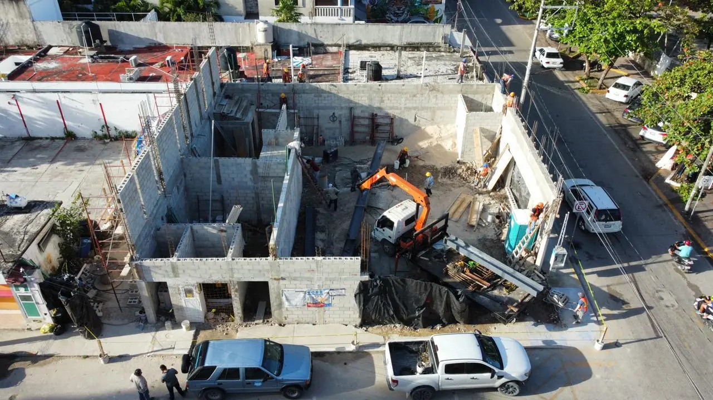

La demanda de naves en Puerto Morelos viene de la distribución para hoteles y supermercados, la logística del aeropuerto, materiales de construcción y comercio electrónico, y la oferta buena escasea. Construimos parques industriales y logísticos para desarrolladores e inversionistas: plan maestro, vialidades para tráileres, agua, drenaje y tratamiento, la subestación que decide quién puede rentar y naves en renta construidas por fases conforme se firman contratos.

Lotes, vialidades para tráileres de 53 pies, restricciones y áreas verdes.
Subestación y red de media tensión para los inquilinos, coordinadas con CFE.
Pozo o red, cisternas, drenaje y planta de tratamiento.
Pavimentos, pluvial y radios de giro para tráileres.
Naves estándar con andenes, a la medida o especulativas.
Barda, caseta, control de acceso y CCTV.
Frío, manufactura ligera y cuartos de datos necesitan una capacidad que la red local muchas veces no tiene. Un parque con subestación y red de media tensión propias puede rentar a inquilinos que otros rechazan, así que dimensionamos la energía para la mezcla objetivo y coordinamos el trámite con CFE desde el inicio.
La urbanización se construye por fases a lo largo de la vialidad principal; las naves siguen a los contratos firmados o a una primera fase especulativa. Las naves estándar — altura libre, andenes, capacidad de firme — se rentan más rápido y se financian más fácil.
Puerto Morelos es de baja altura por diseño: altura y densidad estrictas, un arrecife protegido y una evaluación ambiental cuidadosa. Los compradores quieren proyectos tranquilos, pequeños y bien construidos; los costos son alrededor de 9% mayores que en Cancún.
Las licencias las otorga el municipio de Puerto Morelos; tramitamos uso de suelo, licencia de construcción con DRO y Protección Civil.
| Concepto | Costo |
|---|---|
| Urbanización por m² de lote vendible (vialidades, agua, drenaje, pluvial, alumbrado) | $0–$1,000 |
| Subestación y red de media tensión | $8.7M–$32.7M |
| Nave para renta en obra gris, por m² | $7,000–$13,000 |
| Planta de tratamiento del parque | $3.3M–$13.1M |
| Parque de 10 hectáreas, urbanización | $49.1M–$119.9M |
| Primera fase: 4 naves × 2,500 m² | $70.9M–$130.8M |
En Puerto Morelos: Residencias de marca · Remodelación de supermercados · Remodelación de escuelas · Permisos de construcción · Construcción comercial
Parques industriales en otras ciudades: Cancún · Playa del Carmen · Chetumal
Relacionado: Parques industriales · Residencias de marca
Calculadora de costo comercial · Plazas · Oficinas
Naves industriales y bodegas
Envíe los planos o el terreno; visitamos, revisamos uso de suelo y permisos, y le enviamos un presupuesto por partidas. Respuesta en 2 minutos.
Cotizar por WhatsAppSu opinión ayuda a otros propietarios a decidir, y a nosotros a mejorar.
Escribir una reseñaVer reseñas en Google